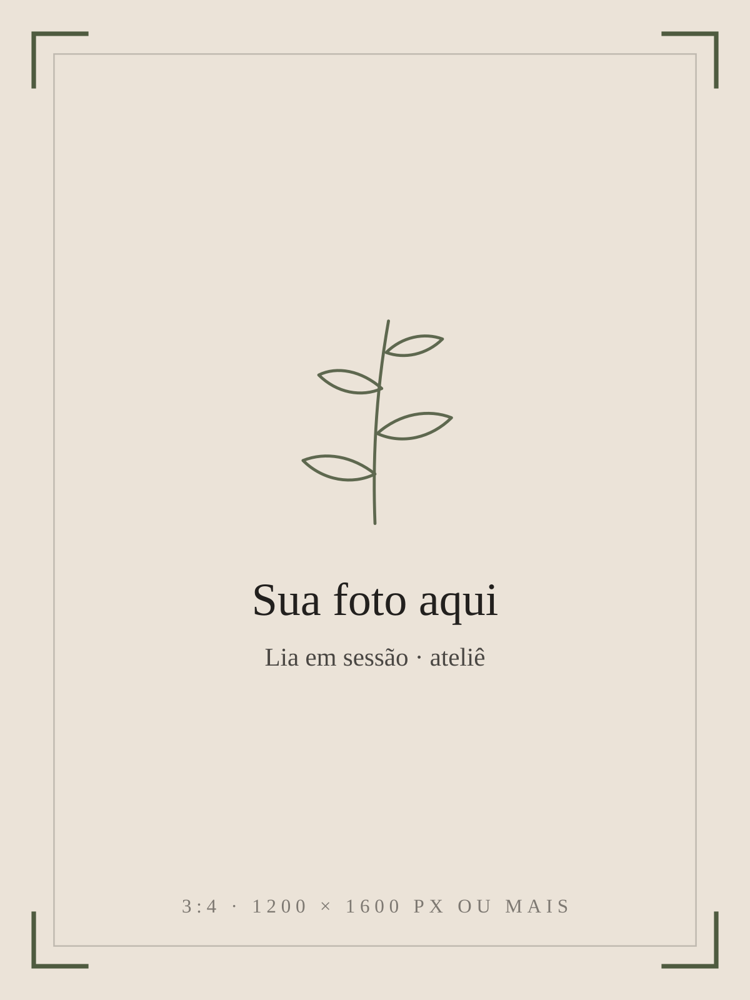
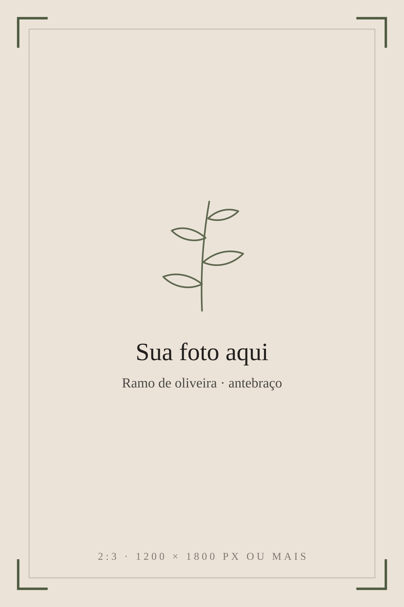
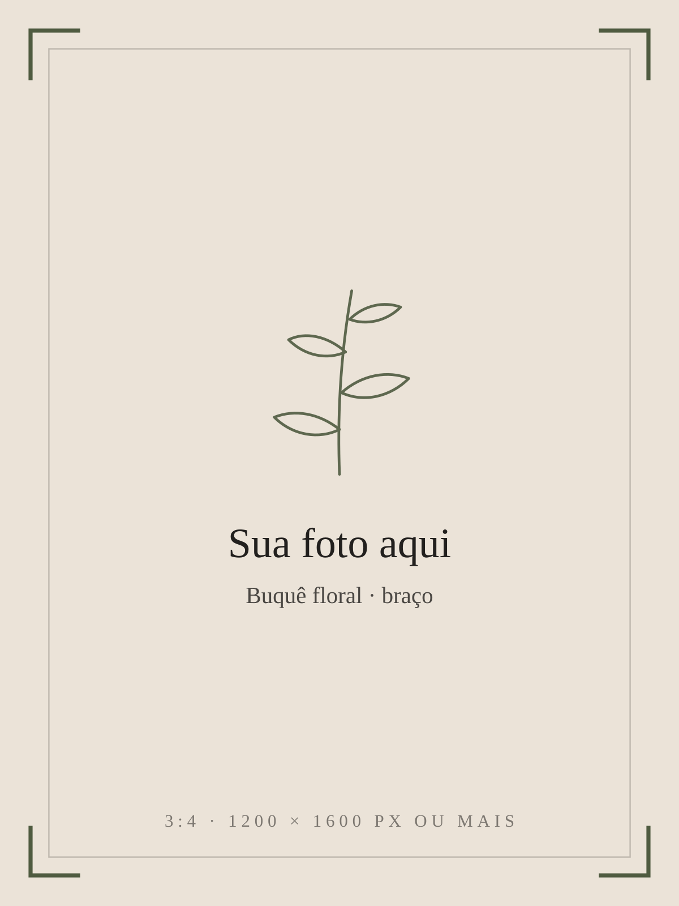
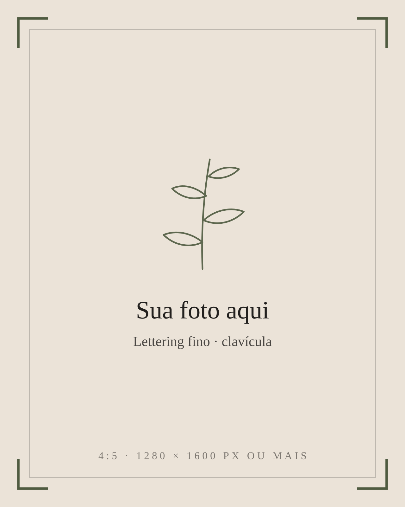
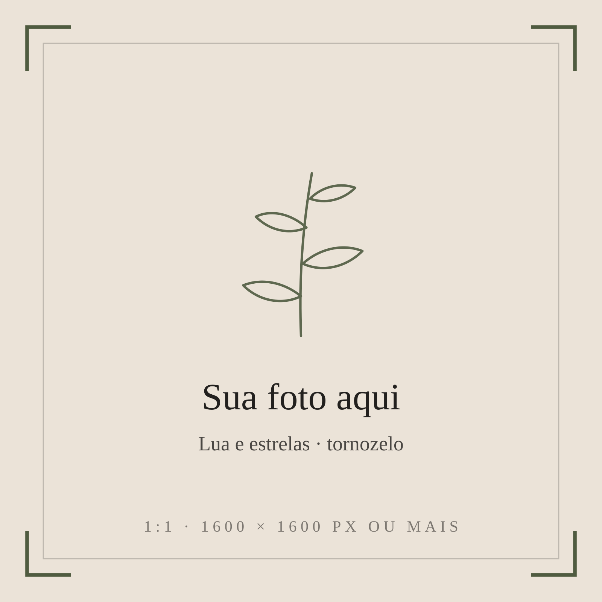
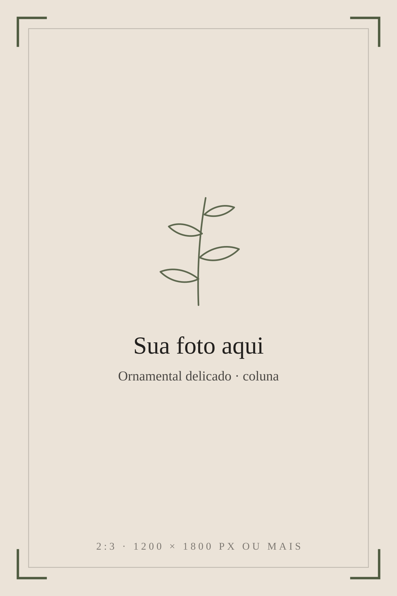
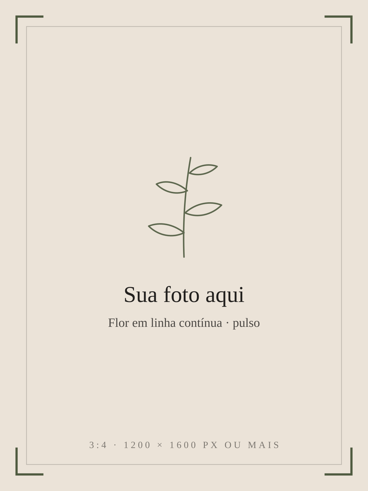
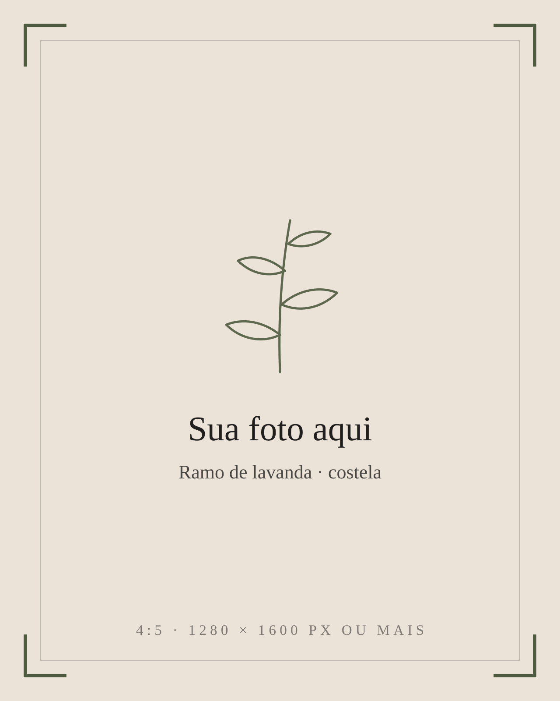
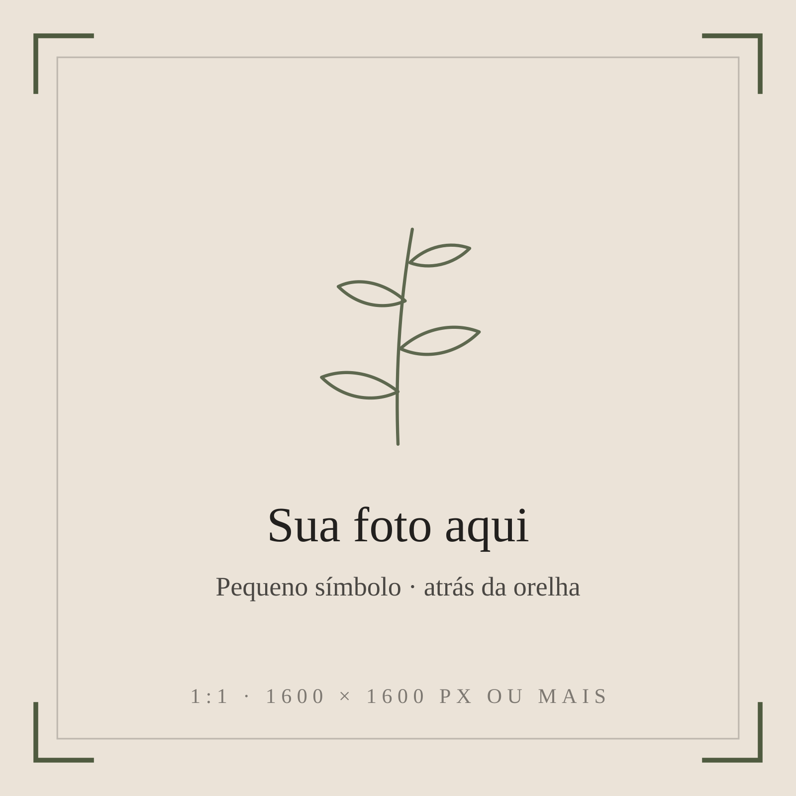
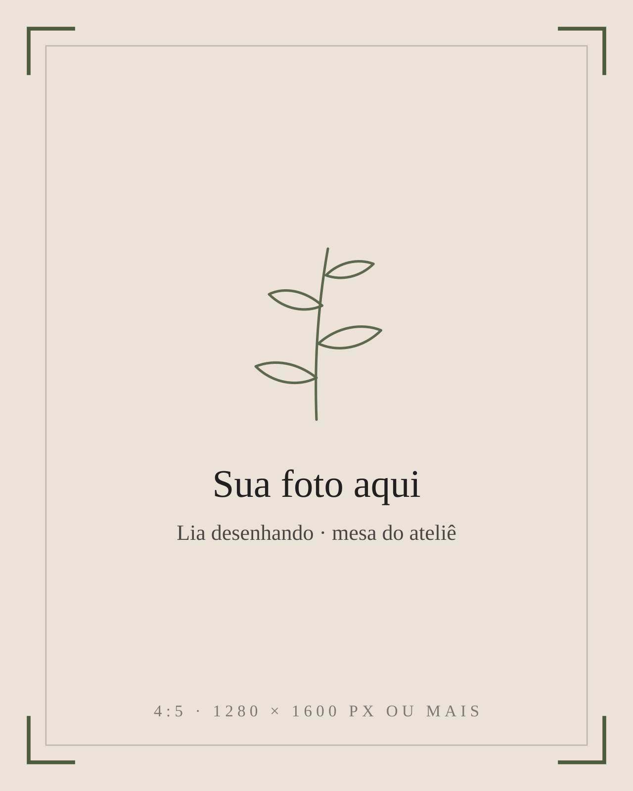

Lia Monteiro · tatuadora de traço fino
Pouca tinta, muito cuidado.
Flores, ramos, letras e pequenos símbolos desenhados pra você, no tamanho e no lugar certos do seu corpo.
Conversar sobre a sua ideia
nº 02 — trabalhos
Desenhos que já
moram em alguém.
Uma seleção recente. Cada um foi desenhado para uma pessoa e um lugar do corpo.








O resto está
na pele de
quem levou.
nº 03 — estilos
Cada ideia pede
um traço.
Todos em linha fina, cada um com o seu jeito de ocupar a pele.
Uma linha
já basta.
Quando o desenho é pensado com calma, cada traço tem motivo para estar ali.

nº 04 — sobre
Oi, eu sou a Lia.
Desenho flores e ramos desde antes de tatuar. Hoje eles vão para a pele.
Meu trabalho é o traço fino: floral, botânico, lettering, ornamentos delicados e pequenos símbolos, sempre em escala pequena ou média. Gosto de começar pela sua história e de olhar com calma onde a tattoo vai ficar, porque no fine line o lugar do corpo muda tudo.
Atendo com hora marcada, uma pessoa por vez, num ateliê tranquilo. Você pode trazer quem quiser e pedir pausa sempre que precisar.
- Desenho autoral
- Peças pequenas e médias
- Com hora marcada
nº 05 — dúvidas
Antes de marcar.
O que quase todo mundo me pergunta sobre o traço fino.
O traço fino muda com o tempo, como toda tatuagem: com os anos a linha pode abrir um pouco. Por isso eu ajusto o tamanho e o espaço entre as linhas pensando em como o desenho vai estar lá na frente, e não só no dia.
Depende do desenho. Detalhes muito pequenos e linhas muito próximas tendem a se juntar com o tempo, então às vezes eu sugiro aumentar um pouco ou simplificar. A gente decide junto, olhando a ideia.
Antebraço, braço, costela, clavícula, tornozelo e costas costumam receber bem o traço fino. Mãos, dedos e pés renovam a pele mais rápido, e a linha tende a durar menos ali. Eu te conto o que esperar antes de você decidir.
Depois da cicatrização, se alguma linha ficou falhada, a gente marca um retoque. As condições eu combino com você já na primeira conversa.
Me manda a ideia, as referências, o tamanho que você imagina e o lugar do corpo. Com isso eu te passo o orçamento e a gente conversa sobre o desenho.
Pode, e ajuda muito. Ela me mostra o que você gosta. O desenho final é feito pra você, a partir dela, e não uma cópia.
Cada pessoa sente de um jeito, e cada região do corpo também. A sessão é sem pressa: a gente para sempre que você precisar.
Você sai da sessão com as orientações explicadas e por escrito. Se surgir qualquer dúvida durante a cicatrização, é só me chamar.
nº 06 — por quê
Por que tatuar
comigo?
-
Desenho feito pra você
Nada sai de catálogo. O desenho nasce da sua ideia, das suas referências e do lugar onde ele vai ficar.
-
Pensado para durar
Linha bem colocada e tamanho certo fazem diferença com o tempo. Eu te explico o que funciona antes de tatuar.
-
Prova antes da agulha
O stencil vai na pele primeiro. Você olha no espelho, a gente ajusta a posição e só depois começa.
-
Sem pressa
Uma pessoa por vez, com tempo para conversar, ajustar e fazer pausas.
-
Conversa direta
Você fala comigo do primeiro rascunho às dúvidas da cicatrização, sem intermediário.
-
Cuidado depois
Você sai com as orientações explicadas e pode me chamar se algo parecer diferente do esperado.
nº 07 — processo
Do rascunho
à pele.
- 01
Conversa
Você me conta a ideia e manda referências, se tiver.
- 02
Desenho
Eu preparo a proposta e a gente ajusta junto até ficar do seu jeito.
- 03
Reserva
Com o desenho alinhado, a data é reservada com um sinal combinado na conversa.
- 04
Prova do desenho na pele
No dia, o stencil vai na pele primeiro. Você confere no espelho antes de começar.
- 05
Sessão e cuidados
A tatuagem é feita com calma, e você leva as orientações de cuidado.